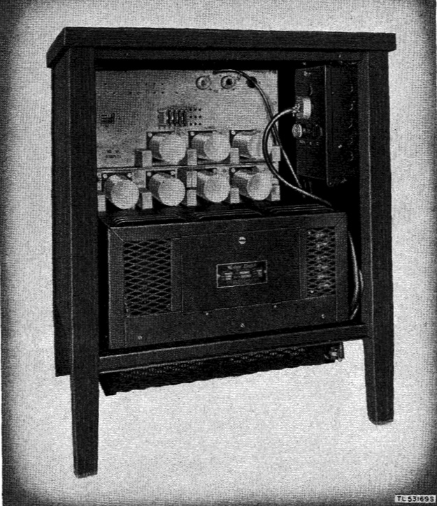
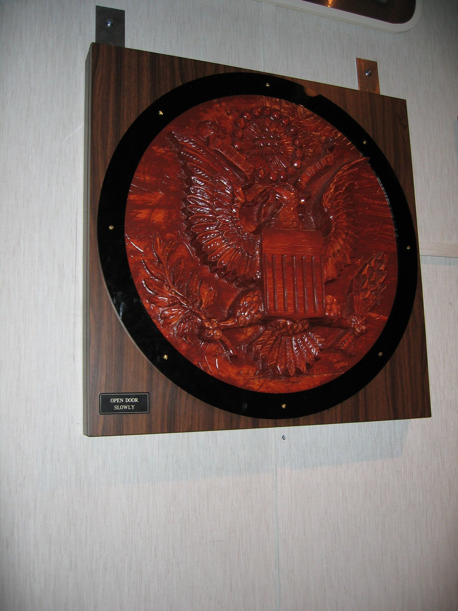
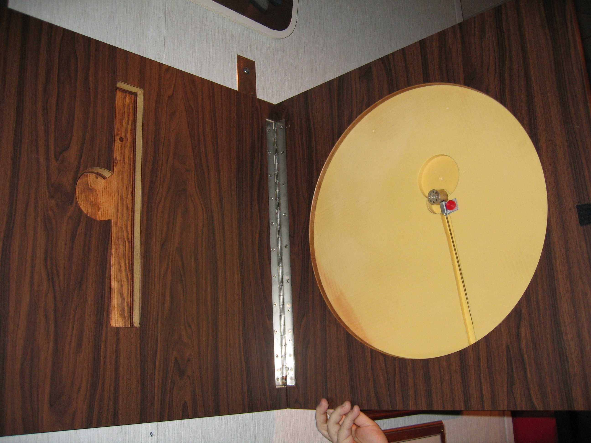
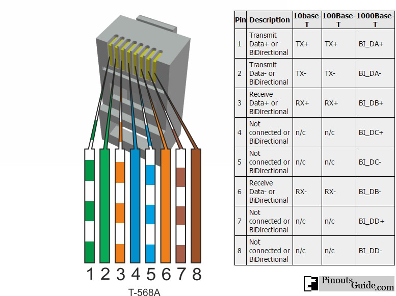
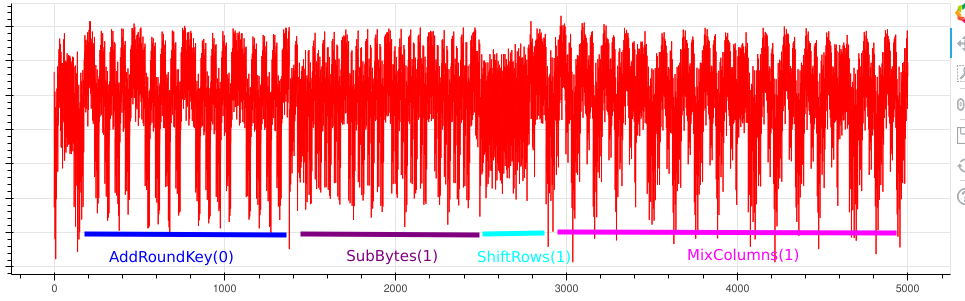
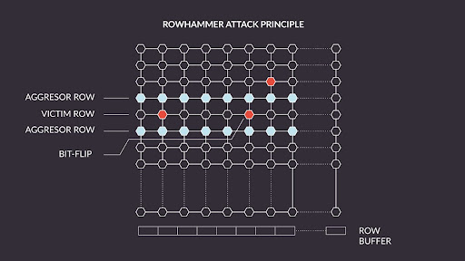
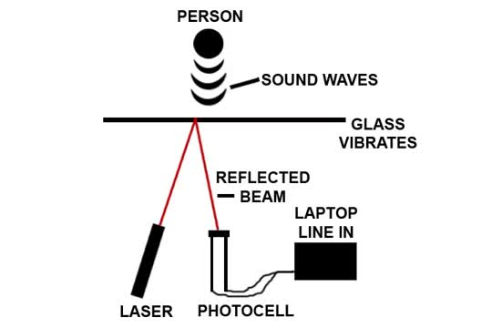

Blinkenlights, friend or foe:
A history of side channel attacks through the ages
By William Ben Embarek
Who Am I
Security Consultant @ WithSecure
CTF Player @ Kalmarunionen
Bornhack Participant @ Pyjam.as camp
First of all this talk is not about the hit 2000 movie Blinkende Lygter
What is this talk going to cover. what you can learn from it.
TL;DR
What is a side channel attack
A history of side channel attacks from ~40s - ~80s
A bunch of more side channel attacks
Why attacks like these pop up
And why they matter
What is a side channel attack?
What is a side channel attack?
Side-channel attack is any attack based on extra information that can be gathered because of the fundamental way a computer protocol or algorithm is implemented, rather than flaws in the design of the protocol or algorithm itself.
What is a side channel attack?
Side-channel attack is any attack based on extra information that can be gathered because of the fundamental way a computer protocol or algorithm is implemented, rather than flaws in the design of the protocol or algorithm itself. system is implemented.
You own a bakery, a new bakery opens up and you are having trouble estimating demand.
Go to rival start at open, buy a peice of bread, keep reciept
Go to rival end of day, buy bread, keep recipet. Compare order numbers
WWII - The rise of side channel attacks
Before D-Day, Panzer V Panther tank was new, american tanks effectiveness unknown, however had only been seen so far in Italy.
Rumors of massive amounts of Panzer V started.
Serial numbers on captured and destroyed tanks were checked and the wheels were observed to be sequentially numbered, including serial number of the gear mold.
Which then allowed for a an estimate of 270 Panzer V Panther tanks produced in Feburary 1944, substantially higher than intelligence had stated, post war documents confirmed it to be 276 Panzer V Panther tanks had been produced.
This is the first big example of what I would define as a side channel attack, a system was introduced without consideration of how it would work and it was abused.

The 131-B2 mixer was an encerypted teleprinter in use during the second world war, built off the one time pad principle.
Built by several electromechanical relays (switches).
The EM radiation created ended up revealing the plain text.
Information was leaked in 3 areas: Radiated Signals, Noise being carried by the communication wires, and magnetic fields.
The fixed version 131-A1 with shielding and filtering was however too expensive to deploy and hard to maintain
The solution was just a 30M perimeter around the equipment.
later in 1951 the CIA discovered they could recover the signals from up too half a KM away.
This gave us signal and power line filters.
This turned into a cat and mouse game of finding issues and fixing them.
Audible sounds could also be exploited it turns out, soundproofing the room made the problem worse as it provided clearer signals to recorders.

Towards the very end of WW2, the russians gifted the following seal to the US Ambassador to the Soviet Union.
Was gifted by a group children as a gesture of friendship. It was of course scanned by an Non Linear Junction Detector for active electronics but nothing was found.

Key word was active components... Inside there was an completely passive bug consiting of an antenna, acting as a repeater, connected to a membrane.
Sound waves from within the room would modulate the antenna. When a radio signal of the correct frequency was pointed towards the antenna it would resonate "repeating" the signal.
However due to the modulation by the sound waves this could be demodulated by an ordinary radio reciever tuned to the same frequency.
Discovered in 1951 by accident by a radio operator at the British Embassy listening too an Open Soviet air force radio channel.
The bug was created by Leon Theremin of the Theremin instrument fame!
Fun fact this is essentially how RFID works
The age of side channel espionage had properly begun.
>
Introducing TEMPEST
A backronym Telecommunications Electronics Material Protected from Emanating Spurious Transmissions
Is a set of standards for protecting hardware from leaking signals, ranging from shielding requirements, too Red Black seperation, where wires in which sensitive data (red) must be physically seperate by X cm.
In 1958 the first policy regarding EMF radiation standards, policy was adopted by Canada, UK within the next year.
With the Cold War well underway as well all forms of data leakage were to be controlled,
At the same time over 900 various different forms of listening devices and sensors had been found in US installations behind the Iron Curtain, TEMPEST leakages needed to be taken seriously.
This led to the development of rooms inside rooms, shielding from EMF, Acoustic or TEMPEST leakages.
While they are used for top secret stuff they are also used other places, fx: Secure RNG or for radar testing
The age of Hackers
Jumping forwards to the 80s, computing had become ubiquitous, with a fair amount of todays audience already using computers.
Before we go any further we are going to start with a video clip which could explain this better than I ever could.
Wim Van Eck published a technical analysis online, showing with around 100dkk worth of equipment he could eavesdrop on CRT monitors.
For the time this was huge as TEMPEST attacks were considered to be only government budget worthy attacks.
Van Eck phreaking as the term was called has been used by many, including IBM for license verification, having the display produce radiation matching to the serial key in use.
IBM would then wardrive to find people who hadnt paid for a license.
The implications of Aesthetics
Almost every single computer in the world features lights which blink for diagnostic purposes, also known as Blinkenlights,
stemming from a humorous faux german sign that has graced computer rooms and datacenters since at least IBM 1955
ACHTUNG! ALLES LOOKENSPEEPERS! Das
computermachine ist nicht fuer gefingerpoken und mittengrabben.
Ist easy schnappen der springenwerk, blowenfusen und poppencorken
mit spitzensparken. Ist nicht fuer gewerken bei das dumpkopfen.
Das rubbernecken sichtseeren keepen das cotten-pickenen hans in
das pockets muss; relaxen und watchen das blinkenlichten.

Back to the network switch, the activity LEDs show when data is being transmitted, easiest way to hook this up? just wire the RX+ cable directly too the LED, easy activity LED.
Do you see the issue?
In 2002 Joe Lughry and David A Umphress had a research paper titled "Information Leakage from Optical Emanations"
By recording the LED one could optically read all the bits coming over the network cable.
Different Types of Side Channel Attacks
Timing Attacks
Power-Monitoring Attacks
Cache Attacks
Electromagnetical Attacks
Acoustic Attacks
Software Initiated Attack
Optical Attack
And Many more
Timing Attacks
for(uint8_t i = 0; i < sizeof(correct_passwd); i++){
if (correct_passwd[i] != passwd[i]){
passbad = 1;
break;
}
}
if (passbad){
my_puts("PASSWORD FAIL\n");
led_error(1);
} else {
my_puts("Access granted, Welcome!\n");
led_ok(1);
}
Power Draw: AES Differential Power Analysis Attacks.
Honestly I could talk about this attack for hours, or I have the hardware with me needed to do this itself so lets do it together after the talk.
Power Monitoring Attacks

Cache Attacks
Talk about meltdown and spectre. 2018
For EMF attacks we already covered them.
Acoustic Attacks
research also suggests that acoustic attacks can involve listening to the stresses in heatsinks that occur during encryption where the temperature rises and falls as the processor works harder
🤔
Software Initiated Attacks

While a rarer form of side channel attack, attacks such as Row Hammer.
Which attempt to flip bits by repeatedly flipping the surrounding bits are a form of side channel attack.
Optical Attacks - 1

As we already covered optical attacks on blinkenlights, optical attacks can also use lasers.
Using a simple laser pointer, a photocell and a AUX cable, one can actually easily record audio across long distances as long as there is something that can vibrate.
Didnt we also just cover that by listening too someone typing we can recover text?
This attack is the reason why top secret meeting rooms wont allow video recording, as with a high enough budget you don't need the laser and can read the vibrations from the video alone.
As a quick side note, only do this if you have permission.
Optical Attacks -2
2019
Light commands was an attack that uses the inverse principle of the previous attack.
By modulating audio into a laser one could remotely from a large distance trigger smart speaker devices.
And many others
And many other Side channel attacks, there are new attacks almost all the time, data exfiltration is still a side channel attack.
The lesson:
Systems are hard to implement. for every single design consideration there is a way it can be abused
And for the love of god use someone else's cryptographic libraries, they have been tested for attacks like these
Further Reading
Silence on the Wire - Michal Zalewski
The Art of Intrusion - Kevin Mitnick
The Cuckoos Egg - Clifford Stoll
Thanks for coming too my talk!
Website / unused blog : https://embar.io/
Untappd : WillBenEm
Kalmar{h0571n6_c0nf3r3nc3_74lk5_ju57_f0r_c7f_fl465_15_c00l}